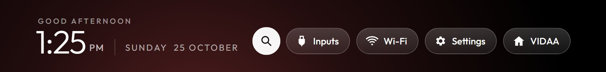
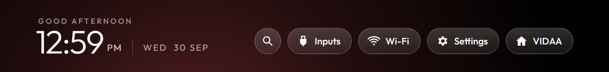

Nothing here worked the first time.
The TV wasn't Android, pages couldn't open apps, tiles couldn't be changed, and Stremio refused to stream. Here is what stood in the way, and what got around it.
It isn't Android
CleanYourTV cleans Android TVs over ADB. This Hisense runs VIDAA, a Linux system with no ADB and no way to install a launcher.
Rebuild the launcher as a web page the TV adds as an app.
A page can't open Netflix
VIDAA ignores the launch message from any page but its own, and its casting service refuses web pages.
A helper on the home network sends the same command Hisense's phone remote does.
Secure pages can't call home
The hosted page is https, and https pages may not talk to a plain-http address on your network.
The page navigates to the helper instead, which acts and sends the TV straight back.
No signal when you press Home
The TV never tells anyone the Home button was pressed, and its status message goes unanswered on this firmware.
Watch Netflix, YouTube and Prime close, and the TV switch on, then bring the launcher back.
Stremio wouldn't stream
Its streaming server ignored the TV, addons were missing, and videos failed with "transcoding" errors because the player asked for all five audio tracks at once.
The helper serves the app, runs the server open to the TV, and lets it transcode eight tracks together.
A browser that can't be installed
Brave won't install on VIDAA, and pages opened as apps can't click links. A test server on the computer showed the TV's own browser opens any address we send.
Search in the launcher, browse in the TV Browser, which has a pointer.

